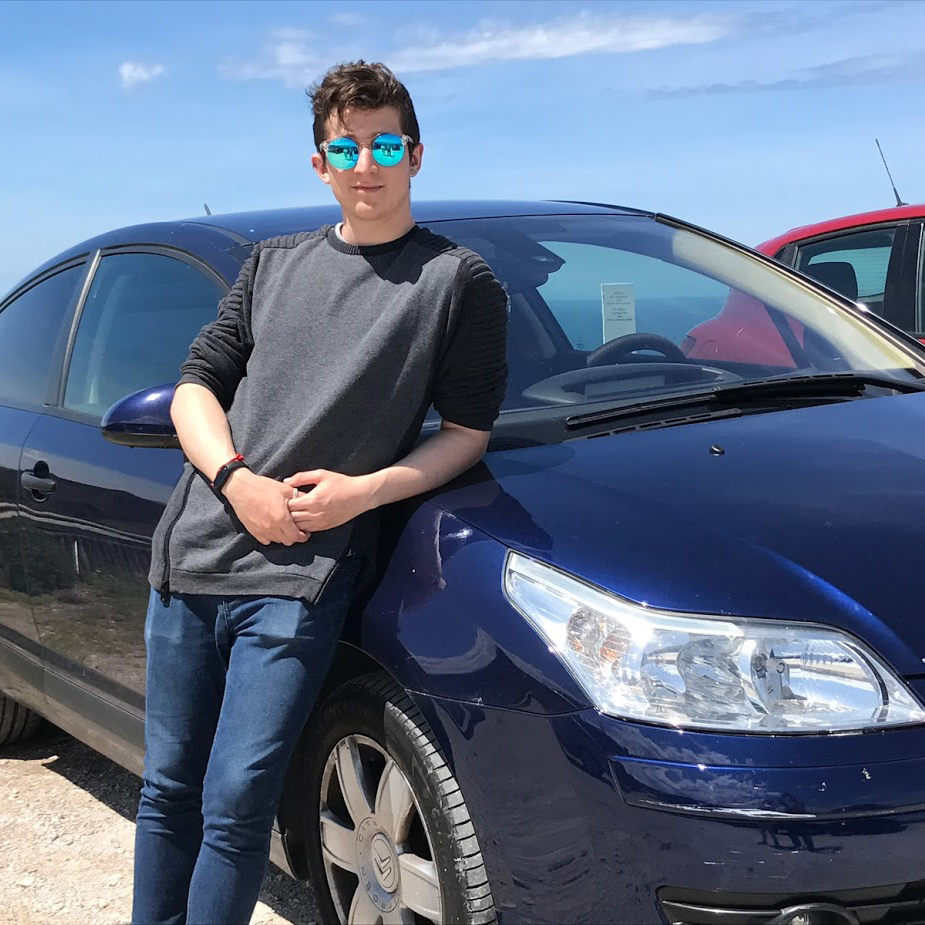

Sobre mí
 Mi nombre es Eduardo Martínez, nací en el año 1997 y desde que era muy, muy pequeño me apasiona el mundo de los videojuegos. Soy un chico muy curioso y por eso me llama muchísimo la atención todo este mundo de los audiovisuales. ¿Y qué tiene que ver la curiosidad en eso? Fácil. Me encanta saber todo aquello que pasa desapercibido al ver una película, una serie, jugar a un videojuego... Me refiero a todo lo que está detrás, al inmenso trabajo que se ha realizado para llegar a eso. Necesitaba resolver esa duda que surgía siempre en mi cabeza: "¿Y eso cómo lo habrán hecho...?" entre muchas otras. Por ello decidí estudiar un CFGS en Realización de Proyectos Audiovisuales y Espectáculos, el cual me encantó y me abrió muchísimo la mente. Pero se me quedaba corto, necesitaba saber más de este mundillo y especializarme en lo que realmente me gusta: La animación 3D y los videojuegos. Así acabé aquí, estudiando AJEI en la U-Tad y realmente contento con lo que hago.